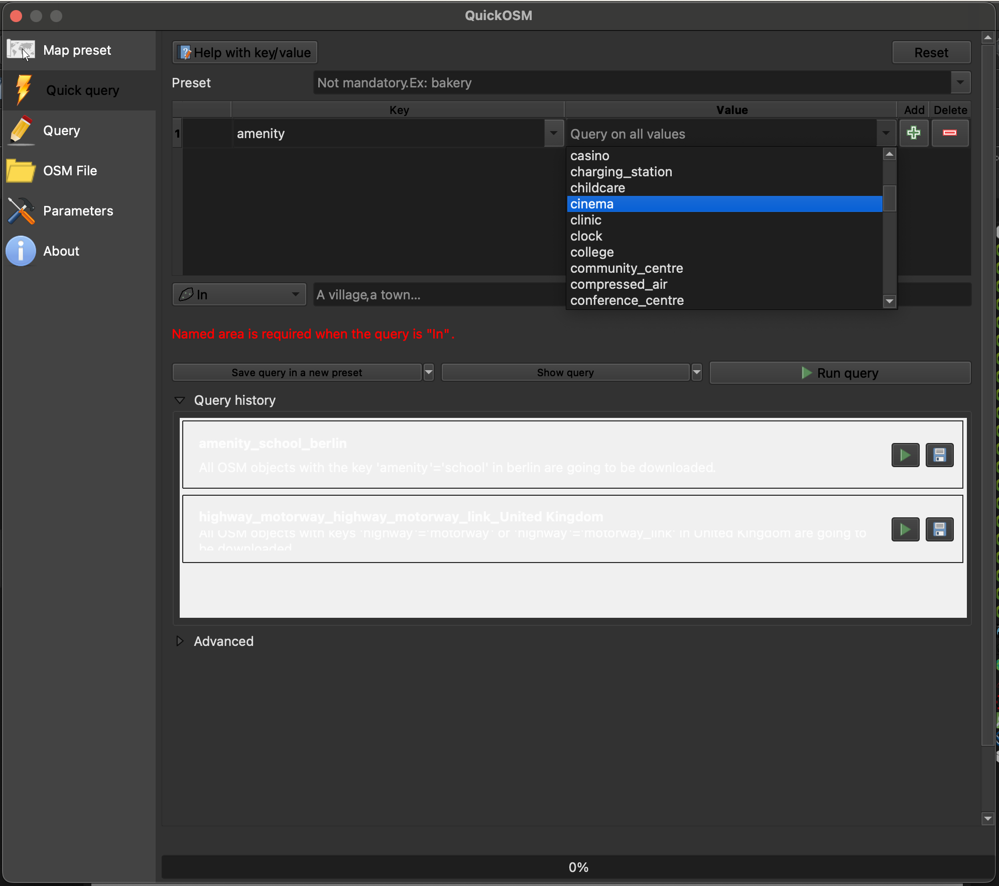
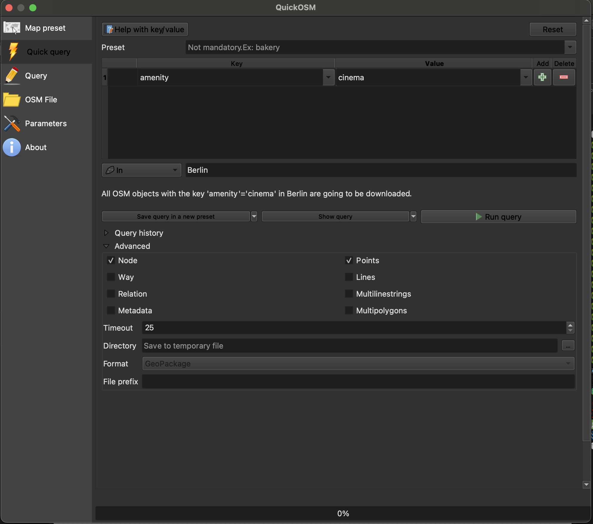
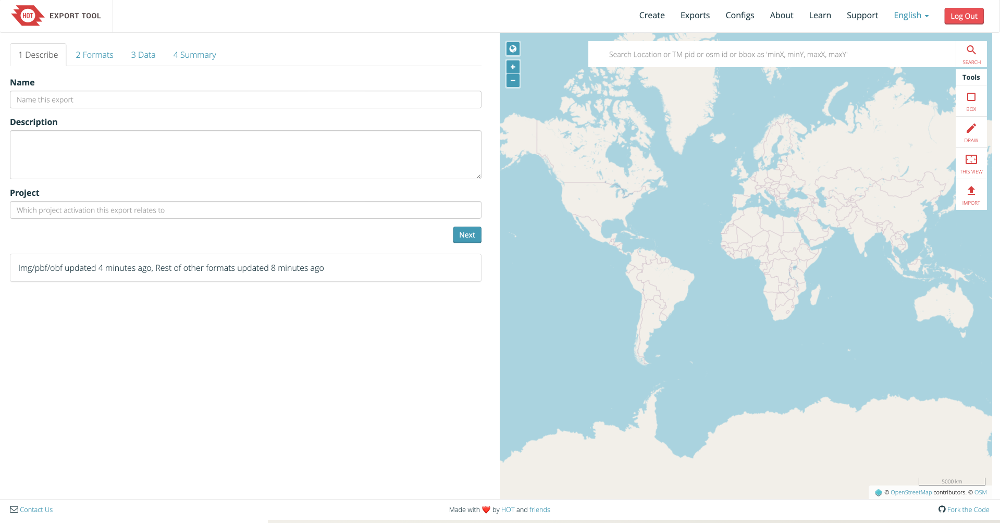
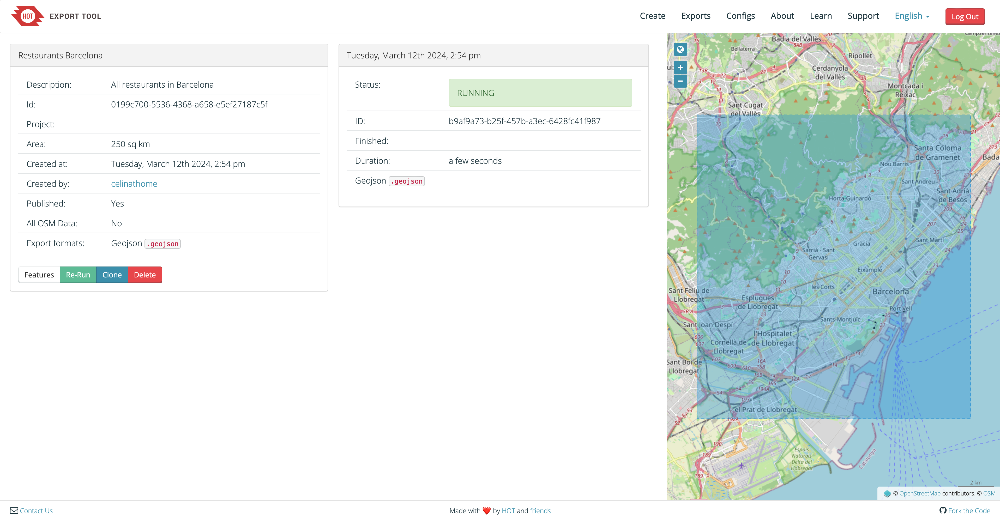

Fuentes de datos#
Para encontrar los datos adecuados que busca, puede consultar plataformas de intercambio de datos en línea. A continuación se destacan algunas de las más importantes.
Qué tener en cuenta al buscar datos#
Fuente de los datos: Asegúrese siempre de utilizar datos que provengan de fuentes de datos confiables. La organización que compartió los datos es el mejor indicador. Además, el uso de los datos en contextos de reconocidos o el número de descargas también pueden ser buenos indicadores.
Tamaño de los datos: A veces se puede acceder a los datos en diferentes escalas, resoluciones, etc. Asegúrese de seleccionar un conjunto de datos que se ajuste a su propósito y que usted pueda procesar fácilmente. Por ejemplo, si solo necesita datos sobre una región específica, solo seleccione los datos de esta área administrativa.
Formato de los datos: Es posible que haya distintos formatos de los datos disponibles entre los que pueda elegir. Piense en sus necesidades y en lo que es más práctico para su uso y, potencialmente, también con el propósito de compartir.
Fecha de captura de los datos: Asegúrese de verificar cuándo se recopilaron los datos y si la recopilación de datos se corresponde con sus necesidades. Verifique si hay datos más actualizados disponibles en otra fuente.
Licencia de los datos: ¿Qué tipo de licencia tienen los datos? ¿Cómo puede utilizarlos y compartirlos y cómo debe citar la fuente de datos? Asegúrese de revisar la licencia y cumplir con las regulaciones respectivas para evitar dificultades.

Los datos para crear mapas o realizar análisis SIG pueden provenir de diversas fuentes (fuente: CartONG)#
Visión general de repositorios útiles de datos#
Datos geoespaciales generales#
Nombre |
Datos |
Enlace |
|---|---|---|
Natural Earth |
Geografía administrativa y física |
|
Geonames |
Datos geoespaciales administrativos |
|
OpenAfrica |
Datos de código abierto sobre África |
|
DivaGIS |
Diferentes datos, p. ej., administrativos, viales, de población, de elevación, climáticos |
|
Open Topography |
Datos sobre topografía |
|
OSM Boundaries |
Límites administrativos (requiere autenticación a través de su cuenta de OSM) |
|
GADM |
Límites administrativos |
Datos humanitarios#
Nombre |
Datos |
Enlace |
|---|---|---|
Intercambio de Datos Humanitarios |
Diversos datos abiertos de diferentes organizaciones humanitarias |
|
Healthsites |
Ubicaciones de centros de salud |
|
Servicios geoespaciales del ACNUR |
Datos sobre poblaciones desplazadas |
|
Waterpoint |
Datos sobre puntos de agua |
Datos sobre desastres#
Nombre |
Datos |
Enlace |
|---|---|---|
MapAction |
Recursos cartográficos para emergencias |
|
Plataforma de descarga de datos y mapas para uso humanitario |
||
ACLED |
Datos sobre conflictos |
|
GDACS |
Base de datos de desastres |
|
ZKI/DLR |
Extensión de las inundaciones, áreas afectadas, datos de observación de la Tierra |
|
PMAAnálisis y mapeo de vulnerabilidades |
Datos sobre seguridad alimentaria, amenazas, conflictos y clima |
Datos de población#
Nombre |
Datos |
Enlace |
|---|---|---|
WorldPop |
Estimaciones de población |
|
GHSL |
Datos globales de asentamientos |
|
HRSL |
Capa de asentamientos basada en la observación de la Tierra y datos de Facebook |
https://research.facebook.com/downloads/high-resolution-settlement-layer-hrsl/ |
GRID3 Extensión y puntos de asentamientos |
Datos sobre la extensión de los asentamientos |
|
Pangea |
Datos ambientales y de ciencias biológicas |
|
Fondo de Población de las Naciones Unidas |
Datos sobre salud sexual y reproductiva y tendencias demográficas |
Datos de edificaciones#
Nombre |
Datos |
Enlace |
|---|---|---|
World Settlement Footprint |
World Settlement Footprint |
|
Superficies de construcciónVIDA |
Conjuntos de datos combinados de superficies construidas generadas por Google y Microsoft |
https://beta.source.coop/repositories/vida/google-microsoft-open-buildings/download/ |
Open-building |
Superficies de construcción generadas por Google |
Datos de teledetección/observación de la Tierra#
Nombre |
Datos |
Enlace |
|---|---|---|
Global Forest Watch |
Datos sobre los bosques mundiales |
|
OpenAerialMap |
Imágenes de drones obtenidas mediante colaboración abierta |
|
Earth Explorer del USGS |
Datos satelitales de múltiples fuentes, incluidos Landsat y Sentinel |
|
Misión de topografía por radar del transbordador espacial de la NASA (SRTM) |
Datos de elevación mundiales |
|
Earth Observe |
Modelo de elevación digital a escala mundial |
|
Copernicus |
Datos de observación de la Tierra |
|
GlobCover |
Datos ráster sobre la cobertura terrestre |
Datos de OpenStreetMap#
OpenStreetMap (OSM) es un proyecto colaborativo que busca crear un mapa del mundo que sea libre y editable. A diferencia de los mapas tradicionales, que a menudo son propietarios y controlados por entidades comerciales, OSM permite que cualquier persona contribuya y edite datos cartográficos, lo que resulta en un mapa detallado y en constante evolución de caminos, senderos, puntos de referencia y más. Con su naturaleza de código abierto y su comunidad mundial de contribuyentes, OpenStreetMap se ha convertido en un recurso valioso para una amplia gama de aplicaciones, desde la navegación y la planificación urbana hasta la respuesta a desastres y la ayuda humanitaria.
Hay múltiples maneras de obtener datos de OpenStreetMap (OSM) como un archivo vectorial en QGIS. Las tres formas más comunes y fáciles de usar son geofabrik.de, la herramienta de exportación HOT y el complemento para QGIS de QuickOSM. Cada una de las opciones tiene ventajas y desventajas.
Tip
Si desea practicar cómo exportar datos de OSM, puede hacer el Ejercicio 4: Exportación de datos de OSM
Como puede ver, Geofabrik es ideal si desea obtener conjuntos de datos de OSM completos para países o regiones enteros.
Ventajas |
Desventajas |
|---|---|
+ Acceso rápido a conjuntos de datos de OSM completos |
- Si uno solo está interesado en entidades o regiones específicas (distintas de los países), no es óptimo |
+ Exportaciones de OSM muy actualizadas |
- Archivo de gran tamaño |
+ Documentación clara de qué entidades de OSM contiene cada archivo shapefile |
- Solo disponible en formato shapefile |
Herramienta de exportación HOT Como puede ver, la herramienta de exportación HOT ofrece una buena combinación de flexibilidad y acceso rápido a los datos de OSM. Sin embargo, se requieren varios pasos para que los datos estén disponibles en QGIS.
Ventajas |
Desventajas |
|---|---|
+ Buenas opciones para la selección de datos |
- Implica muchos pasos |
+ Muchos formatos de datos disponibles |
- La selección de solo tiene una opción fija |
+ Facilidad de uso |
|
+ La consulta se puede repetir fácilmente |
Plugin QuickOSM
Ventajas |
Desventajas |
|---|---|
+ La consulta se puede personalizar para datos muy específicos |
- Requiere conocimiento del modelo de datos de OSM |
+ Los datos se cargan directamente en QGIS |
- Formular consultas puede complicarse rápidamente |
+ La consulta se puede repetir fácilmente |
Tip
Es posible agregar el mapa base de OSM a su proyecto de forma predeterminada. Haga clic en Layer -> Add Layer -> Add XYZ Layer…. Elija OpenStreetMap y haga clic en Add (video en la Wiki).
Plugin QuickOSM#
El plugin QuickOSM facilita descargar los datos dese OpenStreetMap e incorporarlos a su proyecto en QGIS.
Instale el plugin QuickOSM haciendo clic en la pestaña
Plugin, ->Manage and Install Plugins…->All-> busque “QuickOSM” ->Install PluginPara abrir QuickOSM, haga clic en la pestaña
Vector->QuickOSM->QuickOSM
Para trabajar de forma eficiente con QuickOSM, es esencial tener una comprensión básica del modelo de datos de OSM. Aquí hay una breve explicación:
En primer lugar, todos los datos en OSM se organizan utilizando un sistema de claves y valores. Una combinación de una clave y su valor correspondiente se denomina etiqueta. Por ejemplo, considere la clave “amenity”. Según la Wiki de OSM, “’amenity=’ describe instalaciones útiles como sanitarios, teléfonos, bancos, farmacias, prisiones y escuelas”*. Cabe destacar que una clave puede tener múltiples valores, “amenity” por sí sola tiene 8911 valores diferentes. Los ejemplos típicos de valores para los servicios incluyen escuelas y hospitales. Al buscar datos en OSM, es crucial identificar las claves y valores relevantes que representan las entidades deseadas. Algunos recursos útiles para este propósito incluyen taginfo y el artículo de la Wiki de OSM sobre entidades del mapa.
En segundo lugar, una entidad en OSM puede tener múltiples etiquetas, cada una comprende una clave y su valor correspondiente. Esto significa que, a veces, se requieren varios pares clave-valor para recuperar todos los datos deseados. Por ejemplo, consideremos los hospitales. Si bien lo ideal sería que todos los hospitales tuvieran las etiquetas “amenity=hospital” y “Health=Hospital”, es posible que algunos solo tengan una de estas etiquetas. Para garantizar una recuperación de datos completa, es recomendable usar ambas etiquetas al buscar hospitales.
Siga los pasos para obtener los datos:
Seleccione una clave y un valor en la lista desplegable. Si tiene la certeza, consulte aquí:
{kind=link}

Elegir la clave y el valor en QuickOSM.#
Limite el área escribiendo el nombre de su área de interés. También puede elegir desde el menú desplegable
Canvas ExtentoLayer Extenten lugar del nombre de una ciudad o país.Despliegue la pestaña
Advanced. Solo seleccione los tipos de datos que espera para minimizar los errores.
{kind=link}

Ejecutar el plugin QuickOSM.#
Haga clic en
Run query.
Cómo obtener datos para varias consultas
Si desea obtener más datos en la misma área, puede agregar una consulta haciendo clic
en el icono . Tenga cuidado al elegir el operador lógico correcto
And o Or. De no tener certeza, revise la página de consultas no espaciales
en la wiki. Hay un ejemplo de esto en el ejercicio de OSM del módulo 2.
Herramienta de exportación HOT#
Con la herramienta de exportación del Equipo Humanitario de OpenStreetMap (HOT), puede descargar extractos personalizados de datos actualizados de OSM en distintos formatos de archivo. Ofrece una herramienta basada en navegador para descargar datos de OSM, con buenas opciones para especificar la región, el período, el tipo de entidad y el formato de los datos.
Vaya a la herramienta de exportación HOT. Necesita una cuenta de OSM para usar la herramienta.
Si tiene una cuenta de OSM, puede iniciar sesión directamente en la herramienta haciendo clic en
Log in. Si no tiene una, tendrá que crearla: haga clic enLog iny, en la nueva ventana, seleccione la opción de crear una cuenta nueva.Después de iniciar sesión, haga clic en el botón
Start Exportingde la página de inicio para cargar la herramienta.
{kind=link}

La herramienta de exportación HOT.#
Primero agregue un nombre y una breve descripción de su exportación. Luego haga clic en
Next.Elija el formato de archivo que se adapte a sus necesidades. Se recomienda utilizar GeoPackage, pero también se pueden utilizar GeoJSON o shapefile. Haga clic en
Next.La forma más fácil de elegir el tipo de entidad que desea descargar es utilizando el árbol de etiquetas. (la opción YAML es más flexible, pero más avanzada, por lo que nos centraremos en la primera opción).
Hay múltiples maneras de seleccionar su área de interés.
Puede buscarla en la barra de búsqueda en la esquina superior derecha.
Acerque el zoom en el mapa hacia su área y haga clic en
This view.Acerque el zoom y dibuje un cuadro delimitador haciendo clic en
Box.Acerque el zoom y dibuje a mano alzada un polígono haciendo clic en
Draw.O puede cargar una capa como extensión (¡solo .geojson en el crs WGS84!). Haga clic en
Import.
Luego haga clic en
Next. Se verá algo como esto:

Un ejemplo para la herramienta de exportación HOT.#
Haga clic en
Create Export. A continuación, se ejecutará durante unos minutos y se verá así:
{kind=link}

Se ejecuta la herramienta de exportación HOT.#
Después de terminar, el estado cambiará a
COMPLETEDy puede descargar su archivo haciendo clic en el enlace:

Descargar datos de la herramienta de exportación HOT.#
Preguntas de autoevaluación#
Ponga a prueba sus conocimientos
Tómese un momento para recapitular lo que ha aprendido en este capítulo respondiendo las siguientes preguntas:
¿Qué criterios debe verificar al seleccionar los datos geoespaciales de un proyecto? (p. ej., fiabilidad de la fuente, tamaño / resolución, formato, fecha, licencia)
Respuesta
Fuente/fiabilidad: utilice datos de organizaciones con buena reputación, plataformas de confianza o fuentes conocidas por su buena calidad. Compruebe quién publicó los datos, cómo se validaron y con qué frecuencia se utilizan.
Tamaño, resolución y escala de los datos: asegúrese de que la resolución espacial (o detalle) sea adecuada para su proyecto. No seleccione datos demasiado generales ni demasiado específicos innecesariamente (ya que esto podría ralentizar el procesamiento).
Formato: algunos formatos pueden ser más fáciles de usar/compatibles (p. ej., GeoPackage, shapefile, GeoJSON). Elija un formato que sea práctico para sus herramientas y para compartir.
Fecha/vigencia: ¿cuándo se recopilaron los datos? Es importante que el período de los datos coincida con los requisitos de su proyecto. Es posible que los datos más antiguos ya no reflejen las condiciones actuales.
Licencia/derechos de uso: debe comprobar cómo se pueden utilizar y compartir los datos, y si es necesario atribuir la autoría. La licencia puede restringir el uso comercial o las obras derivadas.
¿Por qué la “licencia de los datos” es una consideración importante al usar datos geoespaciales?
Respuesta
La licencia de datos dicta lo que está legalmente permitido hacer con los datos: si puede usarlos libremente, modificarlos, compartirlos o publicar derivados.
Ignorar los términos de la licencia puede provocar problemas legales o éticos (p. ej., infringir los derechos de autor, no dar la atribución requerida) o impedir que distribuya sus resultados.
Algunas licencias son restrictivas (solo para uso no comercial, sin obras derivadas o requieren compartir bajo la misma licencia), por lo que debe asegurarse de que el uso previsto cumpla con esos términos.
¿Cómo afecta la fecha de captura de los datos su utilidad? Ponga un ejemplo en el que los datos antiguos podrían afectar negativamente su análisis.
Respuesta
La fecha importa porque los paisajes, la infraestructura, el uso del suelo, la población, etc. pueden cambiar con el tiempo. Si los datos están desactualizados, es posible que ya no reflejen la realidad.
El uso de datos antiguos puede ocasionar un análisis erróneo si las condiciones han cambiado:
Por ejemplo: Supongamos que usa datos de la red vial de hace 10 años para modelar los caminos más cortos o la accesibilidad actual. Si se han construido muchos caminos nuevos o se han cerrado algunos, su ruta o análisis de accesibilidad sería incorrecto.
O bien, utilizando datos de la cobertura terrestre de hace muchos años: una zona que antes era boscosa ahora puede estar urbanizada, por lo que interpretar las tendencias del hábitat o de la deforestación sería engañoso.
Por lo tanto, la alineación de la fecha de captura de datos con el período de estudio es importante.
¿Cuáles podrían ser los desafíos al integrar datos de diferentes fuentes (p. ej., actualización, diferentes proyecciones cartográficas, formatos, cobertura o integridad de los metadatos)?
Respuesta
Al combinar conjuntos de datos de diferentes fuentes, los desafíos incluyen:
Diferente vigencia/actualidad: un conjunto de datos podría ser reciente, otro antiguo. Esta discrepancia puede generar comparaciones engañosas.
Proyecciones cartográficas/sistemas de coordenadas distintos: los conjuntos de datos pueden utilizar diferentes sistemas de referencia de coordenadas, por lo que debe reproyectarlos a un SRC común.
Desajustes de cobertura: un conjunto de datos podría cubrir solo una parte de su área de interés o tener brechas.
Integridad/calidad de los metadatos: un conjunto de datos puede carecer de metadatos (p. ej., sin fecha, sin documentación sobre cómo se recopilaron los datos), lo que dificulta evaluar la calidad o la compatibilidad.
Diferencias en el esquema de atributos: las diferencias en la nomenclatura de los atributos, las unidades, los tipos de campos y las clasificaciones pueden complicar la fusión o la comparación. Por ejemplo, pequeñas diferencias en el nombre de una entidad (p. ej., un distrito o estado) pueden dificultar la unión de dos conjuntos de datos, ya que será necesario ajustarlos manualmente.
Al realizar un análisis, es importante ser transparente sobre los desafíos o limitaciones de los distintos conjuntos de datos. Esto permitirá que el proceso de toma de decisiones esté mejor informado y también garantizará la reproducibilidad y adaptabilidad de su análisis.